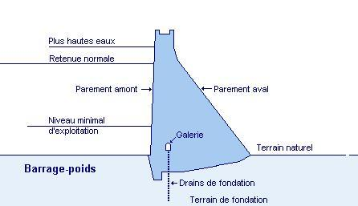
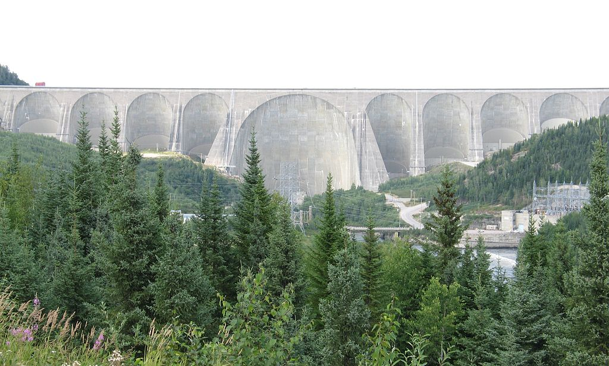
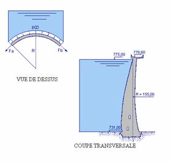

Le présent cours sur les barrages est destiné à connaître l'essentiel sur ces ouvrages sans aller dans un cours complet (pour plus sur le cours, consulté l'ouvrage "Géologie des barrages" par Barbier ed.1958), mais ce cours précise les points géologiques et géotechniques nécessaires aux études.
// Il n'existe pas une méthode standard d'étude, dans la mesure où chaque barrage présente ces spécificités de site, mais la façon globale des études reste identique sachant que les paramètres à étudier sont les mêmes.
Les barrages en béton sont des structures rigides supportant mal les déformations en traction, susceptible de générer des fissures par suite d’un tassement différentiel excessif. Le terrain de fondation doit donc être homogène et de bonne qualité. En général, on choisit un terrain de fondation dont le module de déformation ne présente pas une grande différence avec celui du béton.
Un des avantages des barrages en béton est de pouvoir regrouper, en une seule structure, un maximum d’ouvrages annexes (comme usine hydroélectrique, évacuateur de crue ou tour de prise…).
Y a plusieurs architectures des barrages en béton, on va discuter les BP, BCVM et BV.
Les barrages poids (ou BP) sont des structures très lourds qui résistent à la poussée de l’eau par leurs poids, ils ont tous une forme triangulaire avec un parement amont sub-vertical et un parement aval incliné de tel sorte que la largeur de base soit égale à 80% de la hauteur (tg α = L/H = 0.8).
Quand la vallée est trop large, le barrage poids n’est pas préconisé à cause des grandes quantités de bétons qu’il nécessite. On lui préfère le BCVM (le barrage à contreforts et voûtes multiples) qui est plus économiques, bien qu’ils requièrent un coffrage plus compliqué.
L’ouvrage est constitué d’une série de murs (contreforts) parallèles à la vallée et d’une fermeture par des dalles planes en béton armé ou par des voûtes semi-cylindriques.
| Architecutre du barrage | Effort |
|---|---|
| BCVM | 20 - 30 bars |
| BP | 8 - 10 bars |
| BV | 30 - 70 bars |
La conception des barrages voûtes (ou BV), qui est très ancienne, consiste à reporter les charges sur les appuis latéraux. Le poids de l’ouvrage ne joue aucun rôle vis-à-vis de sa stabilité. Les sous-pressions sont faibles, les poussées horizontales sont les plus importantes et s’exercent différemment sur le rocher en fonction des différents niveaux d’altitude, et de la variation du rayon de courbure de la voûte.
Les poussées horizontales en surface tendent à s’incliner en profondeur par ajout e l’effet progressif du poids de béton. La direction des forces résultantes sur les appuis varie suivant les variations des courbures de la voûte.
Le choix de la conception d’un barrage en une seule voûte est justifié lorsque la vallée est étroite. Le rapport L/H (longueur en crête/hauteur de la digue) doit être compris entre 3 et 6.
L’encastrement est nettement plus important dans un BV, il joue le rôle stabilisateur le plus important, donc les fouilles sont profondes.